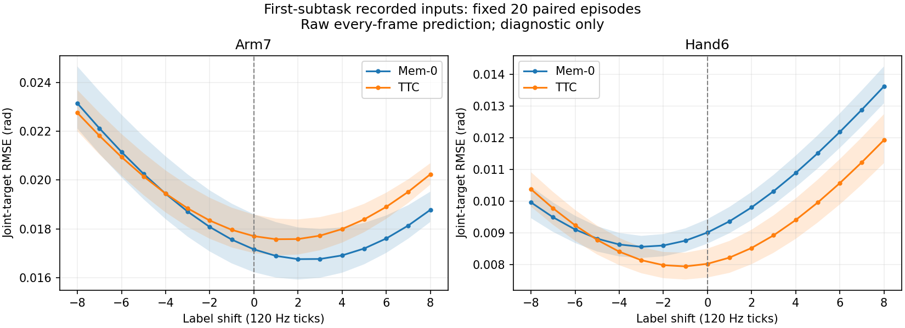
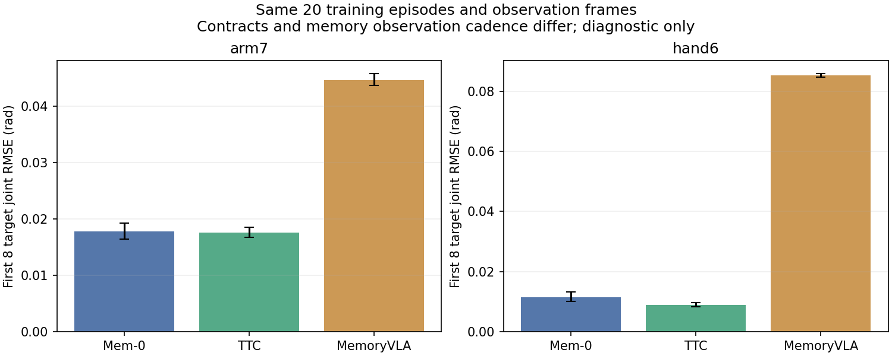

快照 2026-11-11T23:16:44.562049+00:00。T-939/A2生产方已完整核验20份原始归档的字节数、SHA及冻结CPU判定；交接台未独立重放全部120Hz轨迹。
这是辅助条件诊断，未放量100条，全部方法验收尚未完成；正式无辅助主表不变。固定scene0..19、正反各10、seed0、MemoryVLA #74 30k、执行h8。20/20有效，unknown=0。两个独立模型和两个N1仿真均已退出，保留闲置缓存容器，没有新增云端卡。
| 冻结口径 | 整任务 | Wilson 95% | 平均完成阶段 | SR@1 / @3 / @4 / @5 | 正向；反向成功 | unknown |
|---|---|---|---|---|---|---|
| v1.1（本辅助执行条件） | 0/20 | 0.00–16.11% | 0.45 | 6/20 / 1/20 / 0/20 / 0/20 | 0/10；0/10 | 0 |
| r1 | 1/20 | 0.89–23.61% | 1.10 | 8/20 / 4/20 / 4/20 / 1/20 | 1/10；0/10 | 0 |
| r1-released | 1/20 | 0.89–23.61% | 1.05 | 8/20 / 4/20 / 3/20 / 1/20 | 1/10；0/10 | 0 |
| r-max-released | 1/20 | 0.89–23.61% | 1.05 | 7/20 / 4/20 / 4/20 / 1/20 | 1/10；0/10 | 0 |
条件为 G90_O_rmax_S3_stepcap_nativeFF_v4_DIAGNOSTIC：预登记G90附着、S3、手臂步幅限制、原生速度前馈及支撑后释放辅助，480秒，非手持物体倾倒豁免。在线辅助阶段按r-max-released推进；MemoryVLA仍只接收完整global_task，不注入qpos或子任务。原生v1.1执行条件与正式无辅助条件不同。源码215文件保持原冻结版本，SHA256 0b47c9722204964b57e7d17c7ae0472176cea2e56b1614d47650d6884915c81d。
首次基础设施unknown的scene0最终有效闭合为失败；“出现过unknown即失败”敏感性分析在四列均不改变整任务成功数。20条终止原因：9条时间上限无不可逆失败、3条object_toppled、8条object_fell。
场景016在tick26167完成r1-released的五个目标；五个窗口各连续12tick零附着、零Robot接触。五次附着均满足原G90双指接触、≥90%专家闭合量及连续3tick相对稳定门。挂接时单tick最大位置变化0.647mm、角度变化0.02846rad。各次挂接仍有桌面支撑，符合G90不要求预抬升的原登记；不说成“离面后才附着”。
冻结G90在附着期间过滤右手与物体的碰撞，不是contact-preserving v6。日志中的挂接接触间隔均为正，但未做完整扫掠网格穿透检查。该条后来在tick37313出现object_fell；v1.1仅完成1阶段，整任务失败。r1不要求结束保持，故放宽口径1/20成立。完整309.93秒视频保留后续倒杯。
原始日志SHA256 b7a82ef5201409a63c40dd2fcb6e0f43c9948d1b3e7345fefe43f973e57e0fa5。完整视频和逐帧日志已在授权bucket目录生成；public-read上传实际返回403 AccessDenied，尚无新公开视频，未用临时签名链接替代。scene018为v1.1走得最远的失败（3/5），完整480秒视频亦保留。
按编号取训练episode0..19，正反各10。TTC真实FFV1缓存与共同H264解码输入的9844帧RGB逐字节相同，状态、动作、文本、120Hz时序也逐项相同。首子任务共9244个观测帧；每帧原始输出动作分别计算前8、30目标误差。两种方法用各自冻结权重和统计文件；统计SHA不同，但关节顺序、current_row语义、相机及全部state/action min/max数值相同。
| 方法 | 比较前K目标 | 手臂7维RMSE(rad) | 手部6维RMSE(rad) |
|---|---|---|---|
| Mem-0 | 8 | 0.017617 | 0.011816 |
| TTC | 8 | 0.017959 | 0.009875 |
| Mem-0 | 30 | 0.042255 | 0.012104 |
| TTC | 30 | 0.039591 | 0.011174 |
前8目标TTC−Mem-0手臂RMSE差为+0.000342rad（配对episode bootstrap95% −0.000024～+0.000694）；手部为−0.001941rad（−0.002392～−0.001472）。未发现TTC在这些训练帧上整体误差远高于Mem-0的证据，不能据此认定TTC部署链已完全无误或闭环能力足够。
在同一批首子任务帧上扫描标签−8..+8个120Hz控制tick：手臂最小误差在Mem-0 +2、TTC +1；手部在Mem-0 −3、TTC −1。没有统一偏移7/8tick的证据；非零最优偏移本身也不能证明部署bug。首个完成头ready早于标注阳性窗口的episode分别4/20和7/20，均无never-ready；这不是闭环切换准确率。

TTC真实Gen+KF事务未被伪造，所以未执行“第一次切换后30帧”；该部分不与Mem-0强行配对。这里是记录状态和文本下的teacher-forcing、逐帧raw预测，不是闭环h8时序集成，也不是渲染A/B，不能当作策略成功率。
原20条训练episode，按h8每8帧观测一次，共1166次推理；无qpos，只输入原始RGB和完整global_task，每条仅reset一次seed0。自身FFV1缓存与共同输入的9844帧及所有标签逐项相同，PyAV初始四帧与交付fixture字节SHA一致。均使用原交付Torch2.7.1+cu128、DDIM10和CFG1.5，没有修改包、统计或图像处理。
| 相同观测帧 | 前8目标手臂RMSE(rad) | 前8目标手部RMSE(rad) |
|---|---|---|
| Mem-0 | 0.017768 | 0.011560 |
| TTC | 0.017628 | 0.008969 |
| MemoryVLA | 0.044711 | 0.085257 |
注意：Mem-0/TTC此前每帧更新记忆，此处只抽取同帧预测；MemoryVLA按h8频率更新记忆。MemoryVLA不输入qpos，另外两种方法输入q13和子任务，不能把这张表解释成完全相同输入契约的模型排名。
已确认的限制：训练适配器data.py:188使用BOUNDS_Q99；上游normalize_action_and_proprio把超界动作裁剪到[-1,1]。交付runtime.py:81再次按同范围裁剪，并以q01/q99还原13维绝对角。第8维（hand2_joint_link_1_1）下界1.212359rad，原专家开局目标约0.000413rad；原映射无法输出该张手角度。这是训练和交付共有的限制，不是部署统计混用。
在本批9328个前8目标上，即使选择该输出范围内最接近原标签的动作，手部RMSE下限也为0.075815rad；实际0.085257rad。该下界的平方误差为实际平方误差的79.1%，这是数学下界比值，不是闭环失败因果占比。对裁剪后有效训练标签，实际手部RMSE为0.027056rad。原归一化未改，不能把诊断解释成已修复或所有失败根因。

本次新增纯推理首轮在模型加载前发现旧闲置容器NVML/CUDA不可用；宿主机正常、仅重启自己的无模型容器后恢复，经相同cu128环境CUDA回归通过补跑一次。无仿真重跑，最终20份预测及45份输出文件已读回校验SHA，模型GPU已释放。平均每次推理0.202秒，GPU峰值17.16GB。
π0.5原quintic h4十条专家物理完成10/10，但原完整13维RMSE≤0.005准入仅9/10；source-encoded专家007仍不满足。接触分段准入提案待用户决定，未获授权、未按新口径派发策略。正式多帧渲染、合格开环准入及全部方法闭环验收仍未完成；新增开环诊断没有自动授予准入。
已有十分钟设备总利用率低于80%，不声称满载；本批不做新密度扫描。三种方法纯推理使用已有空闲GPU，没有新增仿真或建卡。
完整冻结证据；解压SHA256 6ab1b01a38231f3d537378f32249970b3825b2b8d395cd3d886b2947a2025973。本次仅更新自己的诊断行和报告，已发布严格结果、其他agent全部记录均保留。